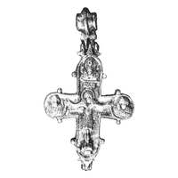
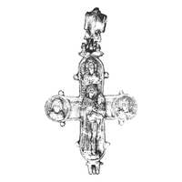

Catalog › CE-0633 · KOR2003-II.1.1.12
Encolpion de argint cu inel biconic, Răstignire cu Maica Domnului, Ioan Teologul, Botezătorul; revers cu Odighitria și sfinți militari
sec. nu mai târziu de prima treime XIII (1201–1300) · Vladimir pe Kliazma, Rusia · Muzeul-rezervație de Stat Vladimir-Suzdal de Istorie, Arhitectură și Artă (VSMZ), Vladimir, inv. В-48510/120
double-sided reliquary cross (enkolpion), argint; c. nu mai târziu de prima treime XIII (1201–1300); found at Vladimir pe Kliazma, Rusia; kept at Muzeul-rezervație de Stat Vladimir-Suzdal de Istorie, Arhitectură și Artă (VSMZ), Vladimir.




Identificare
- Categorie
- Encolpion bivalv (relicvar)
- Material
- Argint
- Tehnică
- Turnare în relief; Gravare (incizie); Aurire
- Stare
- Întreagă
- Dimensiuni
- Î 87 × L 76 × Gr 7 mm
Iconografie
- Avers
- Sf. Ioan
- Descriere avers
- În medalioane busturi în relief: Maica Domnului (cu capul ușor întors spre Hristos și mâna dreaptă întinsă spre El), Ioan Teologul (mâna dreaptă la față, stânga ridicată spre Hristos), sus Ioan Botezătorul (cu mâna dreaptă binecuvântând). Hristos răstignit ocupă centrul și capătul de jos; lemnul crucii redat prin elementele în relief ale stâlpului vertical, traversa prin incizie.
- Revers
- Maica Domnului cu Pruncul; Sf. Gheorghe; Sfinți militari
- Descriere revers
- În centru și pe capătul de jos figura în relief a Maicii Domnului cu Pruncul (Odighitria), în picioare pe sol; în medalioane busturi în relief, frontale, ale sfinților militari: Gheorghe (stânga), Dumitru (dreapta), Nestor (?) (sus).
- Inscripții
- IC XC; MP ΘΥ; Ο Α ΙΩΑΝ; Ο Α ΙΩΑΝ Β (față); ΜΤΗ ΘΟΥ; Ο Α ΓΕΩΡ; Ο Α ΔΗ[Μ]ΗΤΡΗ; Ο Α [Ν]ΕΣΤΡΩ (revers)
- Limba
- Greacă
Datare și atribuire
- Datare
- sec. nu mai târziu de prima treime XIII (1201–1300)
- Centru
- Necunoscut
- Tipologie
- Korzukhina–Peskova 2003, tip II 1 1
Descoperire
- Localitate
- Vladimir pe Kliazma
- Țară
- Rusia
- Context
- Tezaur
- Anul
- 1993
Păstrare și referințe
- Colecție
- Muzeul-rezervație de Stat Vladimir-Suzdal de Istorie, Arhitectură și Artă (VSMZ), Vladimir
- Nr. inventar
- В-48510/120
- Bibliografie
- G. F. Korzukhina, A. A. Peskova, Древнерусские энколпионы. Нагрудные кресты-реликварии XI–XIII вв., Sankt-Petersburg, 2003 [Korzukhina–Peskova 2003], p. 62, cat. nr. II 1 1/12, reprodusă la Табл. 23 (planșe, p. 265). Bibliografie citată în sursă: Жарнов 1994, 61–62; Жарнов 1997, 82–93; Жарнов, Жарнова 1999, цв. вклейка между с. 456–457.
- Figura
- Табл. 23
- Planșe
- Korzukhina–Peskova 2003, Табл. 23 (planșă fără paginație proprie în PDF; p. 265 tipărită)
- Observații
- Datare după Peskova: sec. nu mai târziu de prima treime XIII. Circumstanțe: Săpături arheologice 1993 în partea de est a nucleului istoric (Vetceanîi gorod), cartierul dintre străzile III Internaționala, Herțen, Cehov și Zlatovratski; face parte dintr-un tezaur de obiecte de cult creștin găsit într-o mică groapă pe fundul unei pivnițe a unei locuințe arse în februarie 1238; crucea era într-un toc textil trapezoidal cu plăcuțe de argint cusute (cruce înflorată cu șase brațe pe față, golgotică pe revers); expediția Centrului de Stat, șef Iu. E. Jarnov. Dimensiuni: h 8,7–8,9 cm; l 7,6–7,7 cm; înălțimea valvelor 0,7–0,9 cm. Turnat cu folosirea unei forme de piatră; reliefurile în relief înalt, retușate cu dalta și ciocănașul; urme de aurire; inel de agățare în formă de mărgea biconică goală cu brâuri în relief, cu resturi de șnur de mătase împăturit în două; interior umplut cu masă brună cu cavitate cruciformă cu resturi de lemn (posibil lemnul crucii); pe interior ladă-relicvar (0,3–0,4 cm), cu urme de aurire pe valva de față. Inscripții adânci pe ambele fețe; titlul abreviat al sfinților din medalioanele de sus este gravat la baza balamalelor. Medalioanele și marginea sunt încadrate de un guler în relief cu crestături. Inscripții de verificat pe original. Coordonate: nu sunt date în sursă.
Citare: Corpus Encolpiorum, CE-0633, Encolpion de argint cu inel biconic, Răstignire cu Maica Domnului, Ioan Teologul, Botezătorul; revers cu Odighitria și sfinți militari, --root/piese/KOR2003-II.1.1.12/ (accesat 2026-10-17).